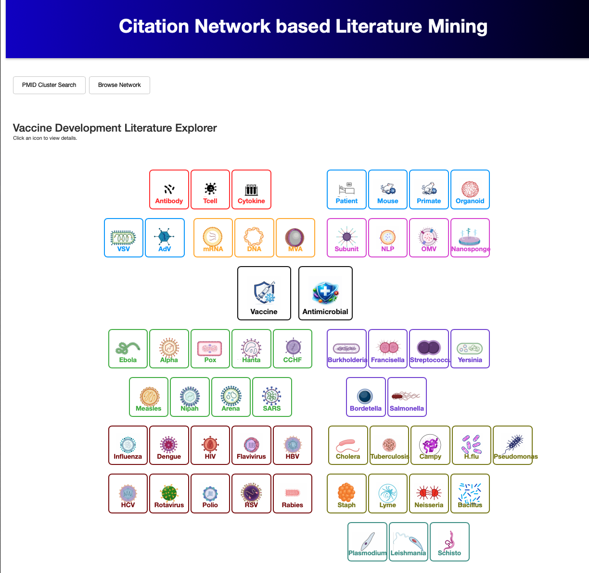
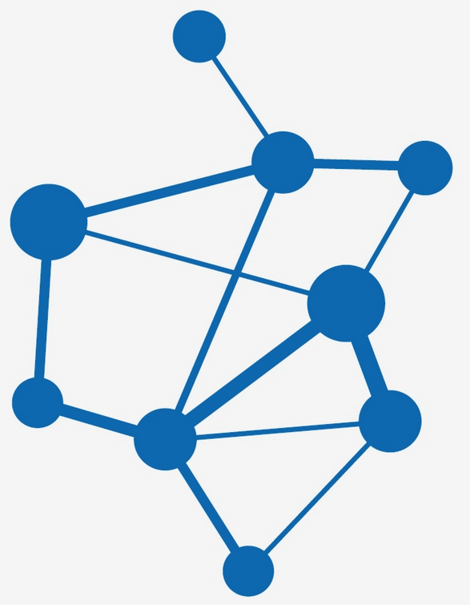
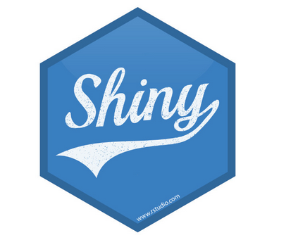

User guide to utilize the citation network tool to find the gaps and recent research development. The tool focuses on the vaccine development literature.
The citation networks tool helps user find the state of the art. It allows user to visualize scientific publications that have cited one another which can be helpful to understand a body of research, track a field of study over time, and identify key topics within a broader research area. For this tool, we are focusing on pathogens (Virus: Ebola, Alphavirus,Pox, Hanta, CCHFV, Measles, Nipah, Arenavirus, SARS-Cov-2 ; Bacteria: Burkholderia, Francisella, Straptococcus, Yersinia, Bordetella, Salmonella and reference pathogens),medical countermeasures (Vaccine, Antimicrobial), host model systems (Patient, NHP, Mouse, Organoid), and correlates of protection (Antibody, T-cell, Cytokine). The keyword search(eg:“Ebola”, case insensitive) is carried out on article title, abstract and titles of references. The dataset is structured as a collection of nodes and edges, where each row represents a citation relationship between two articles(citing pmid and cited pmid). The network is generated using an igraph algorithm and the auto clustering per network is done by Louvain clustering algorithm. The clustering is projected using different resolutions(1,2,5,10,20) . The label, justification and keywords per cluster are generated by using LLM. The results are visualized and integrated in the citation network tool.
Use this application to visualize the gaps and recent development in vaccine research.

The tool follows a workflow that transforms raw source data into a fully integrated and informative web application.:
From keyword-based PubMed retrieval to cleaned, citation-network-ready data visualized in R Shiny.

